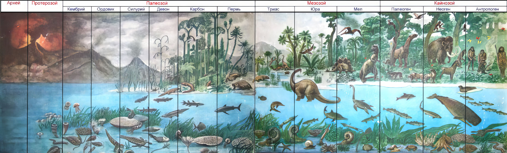

Кто мы?!?

Всемирное агентство счастья — независимая некоммерческая организация.
Агентство учредил Майоров Борис Иванович.
Традиционный заголовок «О нас» — символ того, что счастье всеобщее и личное дело каждого человека.
После регистрации агентства на сайте будут опубликованы реквизиты.
b-i@list.ru
От автора
Жизнь на Земле появилась в форме клеток в тёплой воде, насыщенной минералами.
Клетки делились, объединялись, развивались в органы и через миллионы лет сложные организмы флоры и фауны в своём стремлении к благополучию вышли на сушу.
Через миллионы лет эволюции появились развитые растения, животные и люди.
Человек разумный стремился к счастью через войны, заблуждения, тупики, проблески истины и света. Однако и в XXI веке люди по-прежнему хаотично желают счастья.
Гражданские конфликты вспыхивают по всему миру. Само существование жизни на Земле оказалось под угрозой.
Счастье — смысл Жизни в целом и конкретного человека. Оно стало делом общественной важности. Человечество нуждаются в глобальной системе ценностей для устойчивого развития по аналогии с глобальной Декартовой системой координат для научно-технической революции.
На её основе возникнут гарантии единого статуса всем людям и странам, независимо от сил, средств, знаний человека и сообщества, а позже и единая социально-гумастическая наука.
Если не остановить нынешние тенденции, то через 300 лет экологию не восстановить, да и зачатки цивилизации теперешнего разрозненного человечества могут не проявиться вовсе.
Коротко
~13 млрд. лет — возраст Вселенной.
~5 млрд. лет — возраст Солнца и Земли.
~3,555 млрд. лет — возраст жизни на Земле.
~55 млн. лет назад появились приматы.
~5 млн. лет назад приматы встали на задние лапы.
~2,5 млн. лет назад появились человекообразные.
~350 т. лет назад появились люди — неандертальцы, прожившие 300 т. лет.
~200 т. лет назад появились Homo sapiens.
(300 т. лет — начальный возраст вида.)
~ 50 т. лет назад Homo sapiens стал подобен современному человеку.
~ 3,5 т. лет назад в Месопотамии оформилась цивилизация!
~ 250 лет декларациям прав человека.
~ В разных регионах человечество развивается неравномерно и после распада империй мир погрузился в мировую гражданскую войну.
Две горячие фазы — 1-ая и 2-ая мировые войны не определили общих ценностей и правил обретения счастья.
~ Однако через 100 лет начнут исчезать многие виды млекопитающих, птиц, амфибий.
Человек разумный пока ещё сохраняет шанс на 250 тысяч лет устойчивого развития.
Пришло время единого кодекса устойчивого развития Счастья и достойной Жизни человека и всего живого на Земле.
